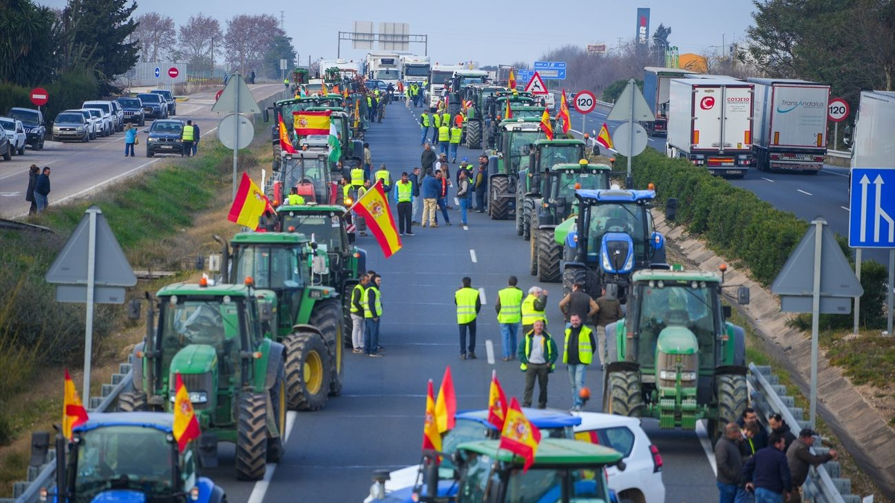

¡Son supernecesarios! ¡Os explicamos por que!
Ayudar a los agricultores es fundamental porque ellos son los encargados de cultivar los alimentos que consumimos a diario. Su labor es esencial para garantizar la seguridad alimentaria y el acceso a una alimentación nutritiva para toda la población. Además, apoyar a los agricultores contribuye al desarrollo económico de las comunidades rurales, promueve prácticas agrícolas sostenibles y ayuda a conservar el medio ambiente. En resumen, brindar apoyo a los agricultores no solo beneficia a ellos y sus familias, sino que también tiene un impacto positivo en la sociedad en su conjunto.
Problemas con los que se encuentran
En la actualidad, los agricultores en España se enfrentan a una serie de desafíos significativos. Entre estos problemas se encuentran la volatilidad de los precios de los productos agrícolas, que a menudo no cubren los costos de producción. Además, la competencia desleal de productos importados de otros países y la burocracia excesiva dificultan la rentabilidad de las explotaciones agrícolas. La falta de acceso a recursos hídricos y los efectos del cambio climático, como sequías y fenómenos meteorológicos extremos, también afectan negativamente a la producción agrícola. Estos desafíos requieren soluciones integrales y políticas que apoyen a los agricultores y promuevan la sostenibilidad del sector agrícola en España.

¿Que podemos hacer para ayudarlos?
Comprar productos locales
Comprar productos locales es una forma poderosa de apoyar a los agricultores y fortalecer las comunidades. Al optar por productos cultivados o elaborados cerca de casa, contribuimos directamente a la economía local al generar empleo y fomentar el desarrollo de negocios familiares y cooperativas agrícolas. Además, al comprar localmente, reducimos la huella de carbono asociada al transporte de alimentos a larga distancia, lo que ayuda a mitigar el cambio climático y promueve prácticas agrícolas más sostenibles. Asimismo, al preferir productos locales, valoramos la diversidad y la calidad de los alimentos, preservando tradiciones culinarias y promoviendo la agricultura responsable. En resumen, al elegir productos locales, no solo disfrutamos de alimentos frescos y de calidad, sino que también contribuimos al bienestar de los agricultores y al desarrollo sostenible de nuestras comunidades.
Apoyarlos mediante las manifestaciones
Manifestarnos junto a los agricultores es fundamental para mostrar solidaridad y apoyo a un sector crucial de nuestra sociedad. Al unirnos en protesta, no solo demostramos nuestro compromiso con la justicia social y económica, sino que también destacamos la importancia de proteger la agricultura local y promover políticas que favorezcan a los agricultores. Nuestra voz colectiva puede influir en la toma de decisiones gubernamentales y empresariales, abogando por condiciones laborales justas, precios justos para los productos agrícolas y políticas agrarias que impulsen la sostenibilidad y la equidad. Además, al manifestarnos junto a los agricultores, mostramos nuestro reconocimiento por su arduo trabajo y nos solidarizamos con sus luchas por un futuro más justo y próspero para todos. En resumen, al unirnos en manifestaciones con los agricultores, estamos defendiendo valores de justicia, solidaridad y sostenibilidad que benefician a toda la sociedad.